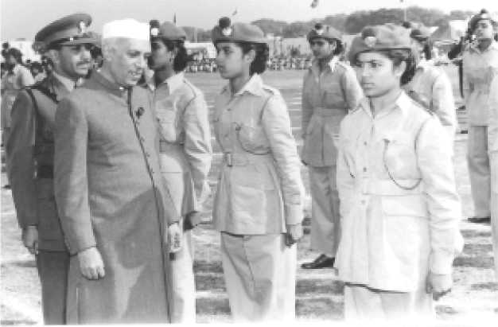
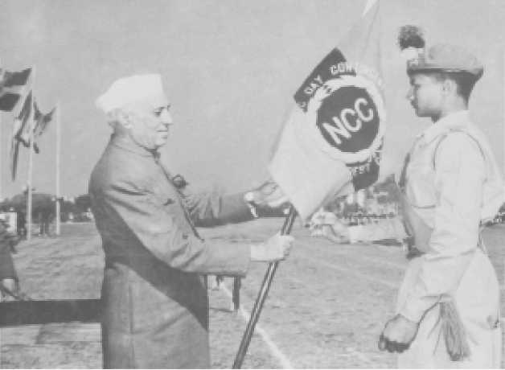

To Create a Human Resource of Organized, Trained and Motivated Youth, To Provide Leadership in all Walks of life and be Always Available for the Service of the Nation.
.png)
.png)
To Provide a Suitable Environment to Motivate the Youth to Take Up a Career in the Armed Forces.
To Develop Character, Comradeship, Discipline, Leadership, Secular Outlook, Spirit of Adventure, and Ideals of Selfless Service amongst the Youth of the Country.
.jpg)
Genesis
The Cadet Corps Committee which was formed on 29 Sep 1946 with Pt HN Kunzru as chairman held six meetings in South Block, New Delhi. At the same time, Pt HN Kunzru formed sub-committees which were sent on study tours in all the main provinces of pre-independent India including provinces which are now located in Bangladesh and Pakistan. One sub-committee was also sent on tour to Great Britain and France from 15 Feb 1947 to 31 Mar 1947 to study the Youth and Cadet organisations in those countries.
The Cadet Corps Committee carried out exhaustive study of the problem of youth in India. Its sub-committees after their tour at home and abroad submitted their report to the Govt of India in Mar 1947. Soon after the report was submitted, a far reaching political development began to impact the country, due to which the Cadet Corps Scheme had to be kept in abeyance. The religious strife which then was at its zenith, ultimately led to the partition of the country into India and Pakistan.
On the stroke of midnight of 14/15 Aug 1947, India achieved her independence. Immediately after independence, India was confronted with problems of formidable magnitude concerning not only repatriation of millions of displaced persons from Pakistan but also a full scale invasion of Kashmir by the Armed tribesmen supported by Pakistan. The armed forces had to rush to retrieve Kashmir at a time when they were already pre-occupied with the internal problem of maintaining law and order during the country's initial stage of consolidation.
The war in Kashmir and the consequent loss of a portion of Indian territory; the open support of Western Powers to Pakistan in the Security Council of the United Nations, made it more than evident to the Indian leaders that they not only had to strengthen the Armed Forces but also create sufficient strength of reserves, who could take up arms, when required. The gravity of time and event found expression in the Indian Legislature through anxious and pressing demand for military training of young men and women throughout the country.
Inauguration of NCCThe schools and colleges opened after summer vacation and the NCC of Independent India was inaugurated on 15 Jul 1948. The journey of this Indian youth organisation, which has now become the largest uniformed youth organisation in the world had begun.
In the year 1948 a total of 96 units of Senior Division were raised, comprising variety of units to include one Armoured Corps, three Artillery, five Engineers, two Signals and two Medical - and 83 companies of Infantry. As there was some delay in the establishment of NCC in UP, Madras and Bihar, whose Govts wanted every student joining NCC to be verified by police prior to enrolment, only 20,000 cadets had joined the NCC in the year 1948. The raising of the Junior Division units did not progress well owing to shortage of trained school teachers. The main difficulty was that adequate number of teachers of the desired quality did not come forward to work as NCC officers. There were various administrative reasons attributed to this. Sometimes, colleges and schools were not in a position to spare the teaching staff except during the summer vacation. Thus the NCC which has now13 lakh cadets on its rolls, had started with 20,000 cadets in 1948.

First Prime Minister of India Jawaharlal Nehru reviewing Guard of Honour

Pandit Jawaharlal Nehru presenting Republic Day banner
MOTTO OF NCC
The need for having motto for the Corps was discussed in the 11th Central Advisory Committee (CAC) meeting held on 11 Aug 1978. The mottos suggested were "Duty and Discipline"; "Duty, Unity and Discipline"; "Duty and Unity"; "Unity and Discipline". The final decision for selection of "Unity and Discipline" as motto for the NCC was taken in the 12th CAC meeting held on 12 Oct 1980.Core Values
The NCC is a responsive, learning and continuously evolving organization. Its activity is guided by certain core values that we endeavour to instill among all ranks of the NCC. These include the following:- A sense of patriotic commitment to encourage cadets to contribute to national development.
- Respect for diversities in religion, language, culture, ethnicity, life style and habitat to instill a sense of National unity and social cohesion.
- Abiding commitment to learn and adhere to the norms and values enshrined in the Indian Constitution.
- Understanding the value of a just and impartial exercise of authority.
- Ability to participate in community development and other social programme.
- A healthy life style free of substance abuse and other unhealthy practices.
- Sensitivity to the needs of poor and socially disadvantaged fellow citizens.
- Inculcating habits of restraint and self-awareness.
- Understanding the values of honesty, truthfulness, self-sacrifice, perseverance and hard work.
- Respect for knowledge, wisdom and the power of ideas.
Pledge
WE THE CADET OF THE NATIONAL CADET CORPS,
DO SOLOEMNLY PLEDGE THAT WE SHALL ALWAYS UPHOLD THE UNITY OF INDIA.
WE RESOLVE TO BE DISCIPLINED AND RESPONSIBLE CITIZEN OF OUR NATION.
WE SHALL UNDERTAKE POSITIVE COMMUNITY SERVICE IN THE SPIRIT OF SELFLESSNESS
AND CONCERN FOR OUR FELLOW BEINGS.
NCC Song Lyrics
Hum Sab Bharatiya Hain, Hum Sab Bharatiya Hain Apni Manzil Ek Hai, Ha, Ha, Ha, Ek Hai, Ho, Ho, Ho, Ek Hai. Hum Sab Bharatiya Hain. Kashmir Ki Dharti Rani Hai, Sartaj Himalaya Hai, Saadiyon Se Humne Isko Apne Khoon Se Pala Hai Desh Ki Raksha Ki Khatir Hum Shamshir Utha Lenge, Hum Shamshir Utha Lenge.Bikhre Bikhre Taare Hain Hum Lekin Jhilmil Ek Hai, Ha, Ha, Ha, Ek Hai Hum Sab Bharatiya Hai.Mandir Gurudwaare Bhi Hain Yahan Aur Masjid Bhi Hai Yahan Girija Ka Hai Ghariyaal Kahin Mullah ki Kahin Hai Ajaan Ek Hee Apna Ram Hain, Ek hi Allah Taala Hai, Ek Hee Allah Taala Hain, Raang Birange Deepak Hain Hum, lekin Jagmag Ek Hai, Ha Ha Ha Ek Hai, Ho Ho Ho Ek Hai. Hum Sab Bharatiya Hain, Hum Sab Bharatiya Hain.
NCC Flag
The NCC flag for various units of the NCC was first introduced in 1951. The flag was of same pattern, colour and size as was used by various regiments of the Army. The only difference was that it had the NCC badge and unit designation placed in the centre. Later on it was felt that the flag should be in keeping with the inter-service character of the Corps. In 1954 the existing tricolour flag was introduced. The three colours in the flag depict the three services of the Corps, red for the Army, deep blue for the Navy and light blue for the Air Force. The letters NCC and the NCC crest in gold in the middle of the flag encircled by a wreath of lotus, give the flag a colourful look and a distinct identity.